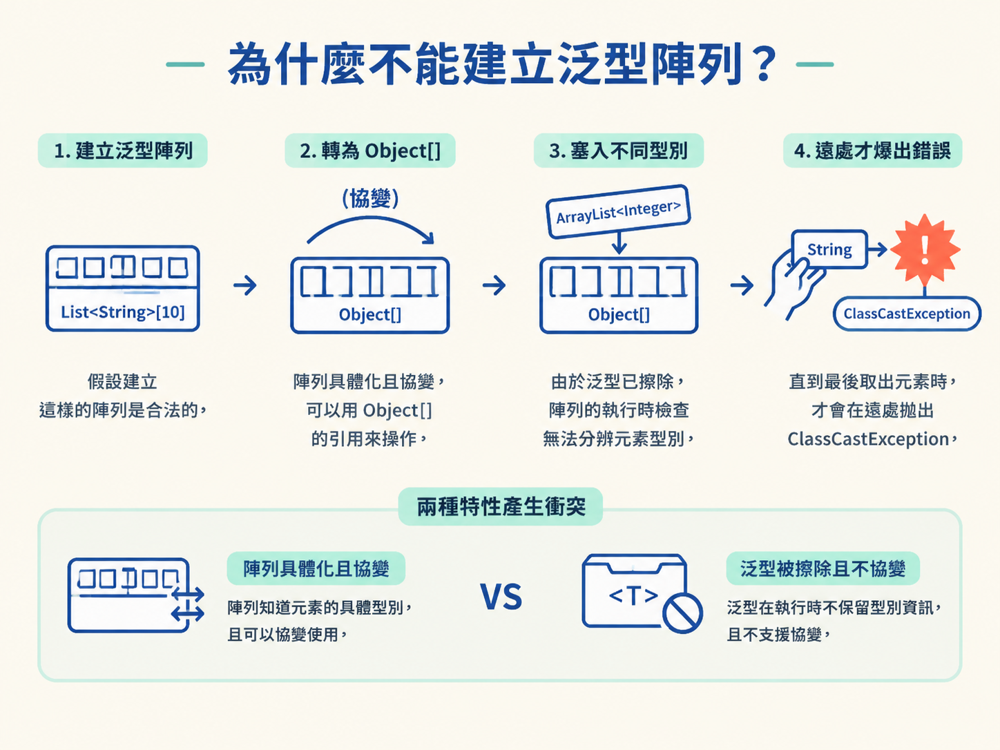

你會學會說明三件事：反射為什麼比直接呼叫慢、動態代理如何在執行時生成，以及泛型擦除為什麼會限制泛型陣列。
你可能遇過這些情境：只寫了一個 MyBatis 的 Mapper 介面，沒有親手建立實作類別，卻可以直接呼叫；在 Service 上加了 @Transactional，交易就自動生效；加入 MySQL 依賴後，連 Class.forName 都不用寫，驅動程式卻自己註冊完成。
這些行為看起來像框架變魔術，其實背後都有相同的核心：程式不是在編譯時就把所有物件決定好，而是等到執行時，才找到要操作的類別與方法。
這一課會把這套機制拆成三個角度來看。反射讓程式在執行時看穿一個類別；代理讓框架可以攔截方法呼叫，在前後插入日誌、交易或權限檢查；泛型擦除則會說明，為什麼編譯器在編譯期檢查得很嚴格，到了執行時卻像失憶一樣。
把這三件事串起來，你就能更容易看懂 Spring、MyBatis、JDBC 等框架究竟替你做了什麼。
先看一般的 Java 程式，也就是正向使用。編譯時你已經知道要建立 User，所以可以直接寫 new User()，再呼叫 user.setName()。編譯器會把類別、方法與呼叫關係連結好，執行時照著已經準備好的路徑走即可。
反射則完全相反。編譯時，程式可能根本不知道是否存在一個叫做 com.example.User 的類別。等程式跑起來後，它才拿著這個字串找到對應的 Class 物件，再分析這個類別有哪些欄位與方法，最後才決定要呼叫哪一個。
這種「執行時才決定」的能力，讓 Java 具備很強的動態特性，也是 Spring 依賴注入、MyBatis 映射與各種序列化框架的重要基礎。不過，彈性就像可調整的活動隔板：空間變靈活了，安裝與移動的成本也會增加。反射的效能代價，正是來自這些執行時的工作。
反射不一定是「呼叫那一行特別慢」，更大的問題是：每次使用時，往往都要重新做解析、檢查與參數處理。
public 還是 private。取得方法與真正呼叫方法時，都可能需要檢查。Method.invoke(Object obj, Object... args) 接收的是 Object 陣列。你傳入 int 時，必須先自動裝箱成 Integer；呼叫完成後再拆箱，過程中還可能伴隨物件建立與記憶體分配。直接呼叫像是走一條已經畫好路線的道路；反射則像每次出門都要先查地圖、確認門牌、檢查通行證，最後才真正上路。偶爾走一次沒有問題，但如果每個請求都重複做這些事，差距就會放大。

既然開銷來自重複解析、檢查與動態呼叫，優化方向也很清楚：把能提前做的事情提前做，或改用更適合的工具。
Class.forName() 或 getMethod()，而是把取得的 Method、Field 物件放進 Map。下次需要時直接取出，避免重複尋找。setAccessible(true)，等於告訴 JVM：「我知道自己正在做什麼。」這可以省下部分存取權限檢查，但也代表程式必須自行承擔突破存取限制的風險。MethodHandle。它可以視為較現代化的反射呼叫方式。也可以使用 ASM、Javassist、CGLIB 等工具，在執行時產生位元組碼，讓後續執行更接近原生程式碼。Spring AOP 的代理機制也會使用這類路線。假設你想在某個方法執行前後加入日誌、交易或權限檢查，但又不想修改原本的方法。這時可以在呼叫者與真正物件之間放入一個代理。
呼叫者以為自己拿到的是原始物件，實際上先經過代理。代理先做額外工作，再把呼叫轉交給真正的目標物件；方法回傳時，也可以再補上另一段邏輯。
代理大致分成靜態代理與動態代理。兩者的差別，不在於能不能「代為呼叫」，而在於代理類別是誰、什麼時候產生的。
靜態代理在編譯期就已經寫死。你要手動建立代理類別，實作與目標類別相同的介面，再在代理裡呼叫真正的目標物件。
這種方式很直觀，但維護成本會隨著類別數量一起上升。假設有 100 個 Service 都要加入日誌，你可能就得手寫 100 個代理類別。只要介面改了一個方法名稱，相關代理也必須全部修改。
動態代理把代理類別的產生延後到執行期。你不需要為每個目標類別手寫一個代理，而是提供一段共用的處理邏輯。JVM 或代理工具會在程式執行時，於記憶體中產生代理類別的位元組碼。
這就像從「每間店各自僱一位櫃檯人員」，改成「制定一套櫃檯服務規則，再由系統依店面自動配置」。不管要增強多少個類別，都可以重複使用同一套邏輯，這也是 Spring AOP 能夠大量套用的原因。
兩種代理的核心差異，在於它們產生代理類別時依靠的方式不同：JDK 動態代理靠介面，CGLIB 則靠繼承。
| 比較面向 | JDK 動態代理 | CGLIB 動態代理 |
|---|---|---|
| 核心機制 | 基於介面。使用 Proxy 與 InvocationHandler，產生一個實作目標介面的類別 | 基於繼承。使用 ASM 位元組碼框架，產生目標類別的子類別 |
| 對被代理類別的要求 | 必須有介面，沒有介面時會直接報錯 | 不需要介面，只要類別不是 final 即可 |
| 底層依賴 | 只使用 JDK 內建的 java.lang.reflect | 需要第三方 cglib 與 asm |
| 限制 | 無法代理沒有介面的類別 | 無法代理 final 類別或 final 方法，因為它們不能被繼承或重寫 |
| 效能現況 | JDK 8 之後已有大幅優化，效能表現已經很強 | 產生代理時較慢，但方法呼叫通常較快，因為可以直接走生成的程式碼，而不是每次都走傳統反射 |
可以把兩者想成兩種不同的接手方式：
final 的限制。Spring 的傳統選擇規則是：目標物件有實作介面時，預設使用 JDK 動態代理；沒有介面時，改用 CGLIB。不過 Spring Boot 2.0 之後，預設傾向直接使用 CGLIB，也就是 proxy-target-class=true。這樣做主要是為了避免某些介面轉型造成的 ClassCastException。

這裡要記住一個實務陷阱：CGLIB 依靠繼承產生代理，所以 final 類別無法代理，final 方法也無法被重寫。某個類別一旦加上 final，原本生效的交易或 AOP 就可能突然失效。
SPI（Service Provider Interface，服務提供者介面）同樣讓程式在執行時決定要使用哪個實作，但它關注的問題與代理不同。
代理是在既有的呼叫路徑上插入額外邏輯；SPI 則是在多個實作之間發現與配對。它的核心精神是：介面由框架定義，實作由第三方提供，程式在執行時自動把兩者配對。
這種設計是 Java 外掛化與模組化的重要基礎。框架只需要依賴介面，不必把某個具體實作寫死在程式裡。
JDK 原生 SPI 有一套固定規則：在 classpath 的 META-INF/services/ 目錄下建立檔案，檔名使用介面的全限定名，例如 java.sql.Driver。檔案內容則填寫實作類別的全限定名。
載入時，程式使用 java.util.ServiceLoader。它會掃描 classpath 下的 jar，找到這些設定檔，再透過反射載入並實例化實作類別。呼叫方只需要呼叫介面，不必在程式碼裡寫死具體的實作類別。
JDBC 就是很典型的例子。JDBC 4.0 之後，你不需要再手動寫 Class.forName("com.mysql.jdbc.Driver")。因為 MySQL 的 jar 裡已經放入 META-INF/services/java.sql.Driver，DriverManager 初始化時呼叫 ServiceLoader.load(Driver.class)，就能自動找到並註冊驅動程式。

JDK SPI 雖然方便，但有三個明顯限制：
Dubbo 因此自行提供了 ExtensionLoader。它把設定檔改成 Key-Value 格式，做到按需載入；再透過 @Adaptive，根據執行時的 URL 參數動態決定要使用哪個實作；同時也支援自動包裝，讓 AOP 邏輯可以套在擴充點外層。
換句話說，JDK SPI 比較像「把所有候選人先叫進來，再從中挑選」；Dubbo 的擴充機制則更像「需要哪個人，才叫哪個人進場」。這也是 Dubbo 微核心架構能保持彈性的原因。
反射與代理都在討論「執行時才決定要做什麼」。泛型擦除則是另一種執行時差異：編譯器在編譯期看得到泛型資訊，但這些資訊不會完整保留到執行時。
Java 的泛型常被稱為「偽泛型」，不是因為它沒有用，而是因為它主要只在編譯期發揮作用。你寫 List<String> 時，編譯器會利用這個資訊做型別檢查，確保你只能放入 String。但編譯成位元組碼後，尖括號裡的型別資訊會被抹掉，還原成裸型別 List。
如果型別參數沒有指定上限，T 通常會被替換成 Object；如果指定了 extends Number，則會被替換成 Number。這個過程就叫做泛型擦除（type erasure）。
主要原因是向後相容。Java 5 才加入泛型，但在那之前，Java 1.4 時期已經有大量程式碼與類別庫存在。為了讓舊程式碼仍然可以在新的 JVM 上執行，Java 選擇在編譯期提供泛型檢查，執行時則盡量維持舊有的類別模型。
這是一種取捨：編譯器可以幫你擋下許多型別錯誤，但執行時不會保留完整的泛型標記。Java 沒有選擇像 C# 那樣把泛型資訊完整保留到執行時。
泛型擦除最容易直接碰到的限制，就是 Java 不允許你寫出 new List<String>[10]。
原因要從陣列與泛型的設計差異看起。它們各自都合理，但放在一起時，執行時檢查的能力會互相衝突。
Integer 放進 String[]，執行時會立即丟出 ArrayStoreException。同時，子類別陣列可以賦值給父類別陣列引用，例如 String[] 可以當作 Object[] 使用。List<String> 在執行時只是一個 List。它不再保留「原本是 String」這個資訊，因此也不知道自己應該阻擋哪一種元素。假設 Java 允許建立泛型陣列，就可能出現下面的情況：
List<String>[] ls = new List<String>[10]; // 假設合法
Object[] oa = ls; // 陣列協變，合法
oa[0] = new ArrayList<Integer>(); // 塞進一個整數 List
List<String> s = ls[0]; // 取出來當字串 List 用
String x = s.get(0); // 這裡才會炸：ClassCastException真正危險的是第三步。因為泛型已經被擦除，List<Integer> 與 List<String> 在執行時都只是 List。陣列的執行時型別檢查無法分辨它們，因此不會在把錯誤放入陣列時阻擋。
錯誤會一路延後，直到最後真正取出元素時才爆出 ClassCastException。這種錯誤出現的位置，通常距離真正造成問題的程式碼已經很遠，追查起來也格外困難。

因此，既然泛型擦除會讓陣列原本可靠的執行時檢查失效，Java 乾脆在編譯期禁止建立泛型陣列，避免這種型別安全被破壞的組合出現。
反射、代理、SPI 與泛型擦除看似分散，其實都圍繞著同一個問題：哪些資訊在編譯期就決定，哪些資訊要留到執行時才決定？
| 機制 | 執行時做了什麼 | 換來的代價或限制 |
|---|---|---|
| 反射 | 執行時尋找類別、欄位與方法，再呼叫 | 需要動態解析、權限檢查與參數處理，JIT 也較難最佳化 |
| 動態代理 | 執行時產生代理，攔截並轉發方法呼叫 | JDK 代理受介面限制，CGLIB 受 final 限制 |
| SPI | 執行時依設定檔發現並載入實作 | JDK SPI 載入策略較粗略，缺少別名、按需載入與 AOP／IOC 能力 |
| 泛型擦除 | 編譯期使用泛型檢查，執行時移除大部分泛型資訊 | 執行時無法完整辨識 List<String> 與 List<Integer> |
反射讓程式在執行時才決定要操作哪個類別與方法；它慢在動態解析、安全檢查、參數裝箱，以及 JIT 難以把方法內聯。常見優化方式包括快取、setAccessible(true)，以及改用 MethodHandle 或位元組碼生成。代理則把增強邏輯插入呼叫鏈中：靜態代理在編譯期寫死，動態代理在執行期生成；JDK 動態代理依靠介面，CGLIB 依靠繼承，因此不能代理final。SPI 用設定檔在執行時配對介面與實作，JDBC 與 Dubbo 都是實際應用。泛型主要只在編譯期存在，執行時會擦除成Object或上限型別；陣列具體化且協變，泛型則被擦除且不協變，兩者的執行時特性衝突，所以 Java 禁止泛型陣列。
到這裡，物件層的幾個重要機制就接上了：物件可以怎麼傳遞、怎麼比較、怎麼建立，也可以怎麼在執行時被找到、包裝與替換。
接下來會把視線移到資料結構。下一節先建立集合框架的全景，再從隨機存取、增刪成本與 CPU 快取的角度，回答一個常見問題：ArrayList 和 LinkedList，到底該選哪一個。